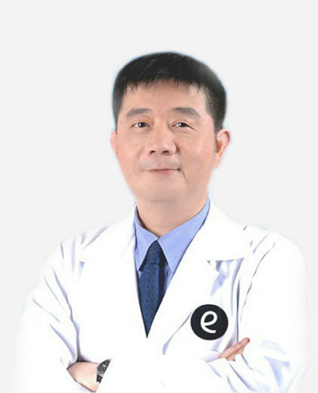

林丕容 台湾大学眼科集团总院长
林丕容眼科医师为大学眼科医疗团队之总院长医师，亦是国内引进近视激光视力矫正技术的先驱之一。
林丕容医师，从念医学院开始，就陆续考取各项专业证照 包括西医师、中医师、公共卫生、证券金融分析师、高级营业员、会计师和化工工程师等共有7张证照，很会念书、考照的他，现在的兴趣是维修 ，亦在忙碌的工作中 ，从台大EMBA毕业，林丕容说，跨领域的学习，让他的视野更广，也替自己创造更多的机会。
林丕容医师亦是国内引进近视激光视力矫正技术的先驱之一，但他表示，从大学时期，不断尝试跨领域学习，除了医师执照外，还拥有包括化工、会计、证券金融分析师等非医学专业的证照，同时也深入古老的中医领域，这些学习不是为了分数，不是为了別人，完全是为自己心里的那张企业蓝图，要用商业模式经营医疗事业，为更多人提供更多样的服务。林丕容强调，考取证照不是重点，重点是中间获取知识的过程，因为广博涉猎，才能用更开阔的视野让旗下大学眼科诊所成为全台知名的眼科连锁，他不只分享成功的故事，更要跟所有人沟通如何运用知识的力量，矫正对生涯规划的「近视」大学林丕容医师指出，21世纪是更加重视人的健康生活、生命价值的世纪，人们活的愈久，愈好，愈能享受科技的好处，活的更有活力、有价值、更青春，他所想要创造的就是这样一个环境，让大学光学从医疗美容、眼科医疗、到眼镜美学的提供等，架构出一个美好的环境。
现任
- •太学光学医疗集团总裁
- •太学眼科总院长
- •福建医科大学教授
- •太学医疗保健教育基金会创办人
学历
- •台湾大学医学院医学系学士
- •广州暨南大学生物医学工程博士
- •台湾大学 EMBA 管理硕士
- •北京大学光华管理学硕士